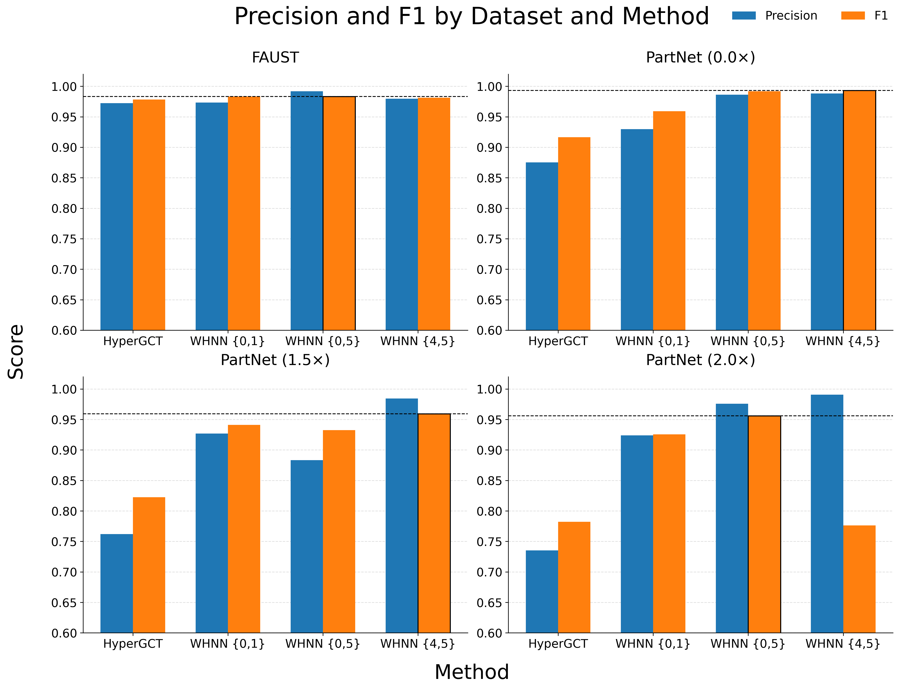
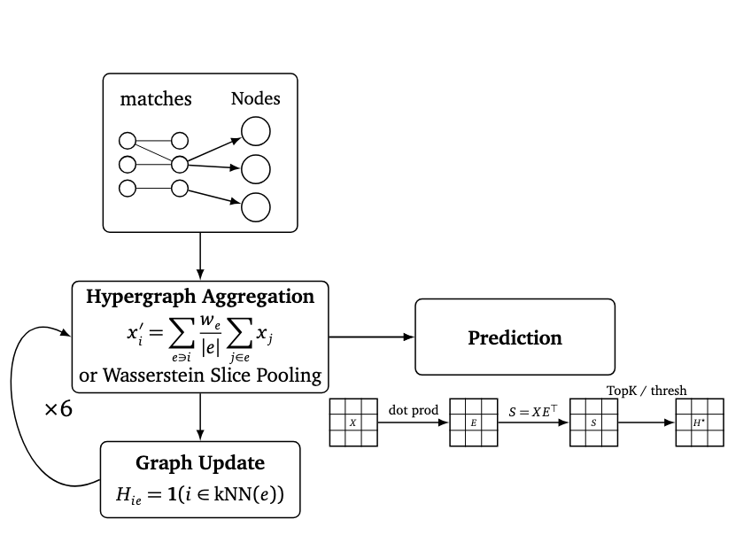
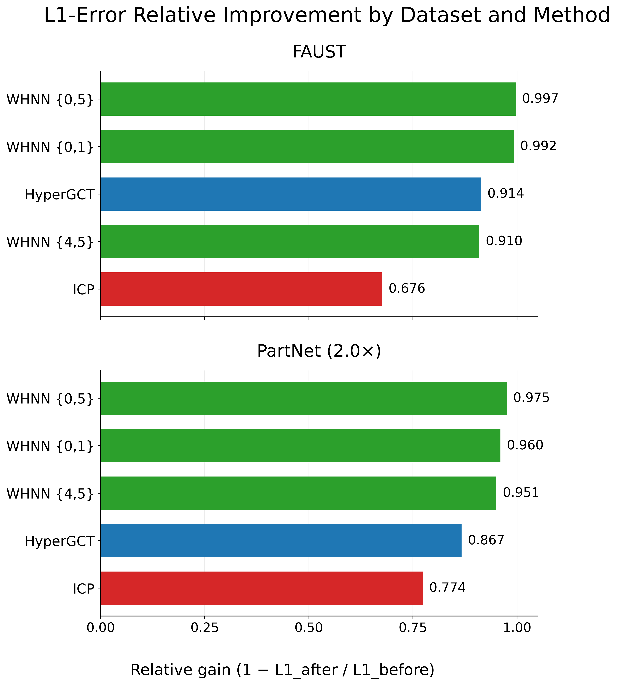

Wasserstein Hypergraph Learning for General 3D Point Cloud Alignment
Students
Chanyoung Park (chp026@ucsd.edu)
·
Minghan Wu (miw039@ucsd.edu)
Mentors
Gal Mishne (gmishne@ucsd.edu)
·
Yusu Wang (yuw122@ucsd.edu)
Overview
Accurate 3D point cloud alignment is used for shape correspondence, reconstruction, and tracking. In practice, alignment is challenging due to non-rigid deformation, partial observations, and noise.
This project studies one key design choice in hypergraph alignment pipelines: how to aggregate neighborhood (hyperedge) information. Instead of mean pooling, we use a Wasserstein-based aggregation that is more sensitive to the distribution of features within a neighborhood.
What we contribute
- Wasserstein aggregation in hypergraph layers: We replace mean pooling in HyperGCT with a sliced-Wasserstein aggregation operator that treats neighborhood features as empirical distributions rather than simple averages.
- Placement study: We compare several layer-placement strategies and show that the best placement depends on the dataset and deformation regime.
- Piecewise-rigid post-processing change: For the piecewise-rigid setting, we replace HyperGCT’s original post-processing stage with a matching-based hypothesis-generation alternative.
Problem setup
Given a source point cloud and a target point cloud, our goal is to predict correct point-to-point correspondences between the two shapes (dense or semi-dense), even when the data includes non-rigid deformation, partial overlap, and noise.
We frame this as a classification problem over candidate source–target pairs: each candidate pair is predicted as an inlier (true correspondence) or outlier. During evaluation, candidates are generated using k-nearest neighbors in feature space.
Why this matters
Many alignment pipelines rely on local neighborhoods to decide whether a candidate correspondence is geometrically consistent. If neighborhood features are summarized poorly, the model can confuse true matches with outliers, especially under deformation, partial overlap, and noise.
A common choice in learning-based hypergraph alignment (including standard HyperGCT) is to use mean pooling to summarize hyperedge information. Mean pooling is simple and efficient, but it can blur multi-modal neighborhoods and wash out small but important structures. This motivates using a distribution-aware aggregation that better preserves how features are spread within a neighborhood.
Technical note
Let a hyperedge (neighborhood) contain feature vectors \( \{h_1, h_2, \dots, h_k\} \) with \( h_i \in \mathbb{R}^d \). Standard HyperGCT-style aggregation uses mean pooling:
\[
m_{\text{mean}} = \frac{1}{k}\sum_{i=1}^{k} h_i
\]
Mean pooling compresses the entire set into one vector, but different neighborhoods can share the same mean even if their feature distributions are very different. To keep distributional information, we treat the neighborhood as an empirical measure:
\[
\mu = \frac{1}{k}\sum_{i=1}^{k} \delta(h_i)
\]
Our idea is to aggregate by comparing this distribution to a learned reference distribution \( \nu \) using an optimal transport (Wasserstein) distance. A common practical approximation is the sliced Wasserstein distance, which projects features onto 1D directions \( \theta \) and averages 1D Wasserstein distances:
\[
\mathrm{SW}(\mu,\nu)
=
\frac{1}{L}\sum_{\ell=1}^{L}
W_1\!\left((P_{\theta_\ell})_{\#}\mu,\,(P_{\theta_\ell})_{\#}\nu\right)
\]
where \( (P_{\theta})_{\#} \) denotes the pushforward distribution after projection onto direction \( \theta \), and \( W_1 \) is the 1D Wasserstein-1 distance computed from sorted projected samples. Intuitively, mean pooling keeps only the first moment, while Wasserstein-style aggregation is sensitive to how mass is arranged, helping preserve multi-modal neighborhood structure.
Baselines
ICP (Iterative Closest Point)
ICP is a classical alignment method that alternates between assigning closest-point correspondences and updating the transformation. It works well for rigid or near-rigid cases but can be sensitive to initialization and can struggle under partial overlap, noise, and non-rigid deformation.
Technical note: ICP
ICP (Iterative Closest Point) is a classical rigid registration method that alternates between estimating correspondences and updating a rigid transform. Given source points \( \{x_i\}_{i=1}^{N} \) and target points \( \{y_j\}_{j=1}^{M} \), ICP repeatedly:
-
Assign correspondences by nearest neighbor under the current transform
\( (R,t) \):
\[ j(i) = \arg\min_{j} \left\| R x_i + t - y_j \right\|_2 \]
-
Update the rigid transform by minimizing alignment error over the assigned pairs:
\[ (R,t)=\arg\min_{R\in SO(3),\,t\in\mathbb{R}^3} \sum_{i=1}^{N} \left\| R x_i + t - y_{j(i)} \right\|_2^2 \]
In practice, the transform update is typically solved with a least-squares rigid alignment step (e.g., SVD/Procrustes-style update after centering the matched points).
Why ICP is a useful baseline: it is simple, fast, and often strong for rigid or near-rigid registration when initialization is good.
Common failure modes: ICP can degrade under poor initialization, outliers, partial overlap, and non-rigid deformation because nearest-neighbor assignments may become unstable or geometrically inconsistent early in optimization.
HyperGCT (dynamic hypergraph alignment baseline)
HyperGCT builds a dynamic hypergraph over candidate correspondences and uses hypergraph message passing to classify inliers vs. outliers. In the standard HyperGCT pipeline, neighborhood (hyperedge) information is summarized using mean pooling. Our method keeps the same overall structure and replaces this mean pooling step with Wasserstein-based aggregation.

Technical note: HyperGCT (dynamic hypergraph baseline)
HyperGCT-style alignment treats candidate correspondences as the main objects to score, rather than directly regressing a transform from raw point clouds. A candidate node is a source–target pair \( v=(i,j) \), where source point \( p_i \) is paired with target point \( q_j \).
The key idea is to model higher-order geometric consistency among candidate correspondences using a hypergraph:
- Nodes: candidate correspondences \( v=(i,j) \)
- Hyperedges: groups of candidates that are likely to be geometrically compatible (e.g., similar local distance/structure patterns)
This is more expressive than a standard pairwise graph because a hyperedge can summarize consistency over a set of candidates at once, which is useful when local geometry is noisy or ambiguous.
In a HyperGCT-style pipeline, the model iteratively performs:
- Candidate construction (train/eval candidate pairs)
- Dynamic hypergraph construction/refinement over candidate nodes
- Hypergraph message passing to update candidate features using neighborhood (hyperedge) information
- Inlier scoring for each candidate correspondence
- Hypothesis generation / matching to convert scores into a correspondence plan and alignment hypothesis
A simplified hypergraph message-passing view is:
\[
h_v^{(\ell+1)} = \phi^{(\ell)}\!\Big(
h_v^{(\ell)},
\operatorname{Agg}_{e \ni v}\big(\{h_u^{(\ell)} : u \in V(e)\}\big)
\Big)
\]
where \( h_v^{(\ell)} \) is the feature of candidate node \( v \) at layer \( \ell \), \( V(e) \) is the node set of hyperedge \( e \), \( \operatorname{Agg} \) aggregates neighborhood information, and \( \phi^{(\ell)} \) denotes the learnable update block.
In the standard baseline, hyperedge/neighborhood aggregation is typically implemented with a simple mean-style pooling operator:
\[
m_e^{(\ell)} = \frac{1}{|V(e)|}\sum_{u\in V(e)} h_u^{(\ell)}
\]
What our project changes: we keep the HyperGCT-style dynamic hypergraph pipeline and candidate scoring setup, but replace this mean hyperedge aggregation step with a Wasserstein-based aggregation in selected layers (first / last / multiple-layer placements).
This isolates the effect of a distribution-aware aggregation operator while preserving the overall baseline structure for a fair placement study.
Method
We use a HyperGCT-style dynamic hypergraph alignment pipeline as the base architecture and isolate one design choice: the hyperedge (neighborhood) aggregation operator used during hypergraph message passing. The baseline uses mean pooling; our WHNN variants replace this operator with a Wasserstein-based, distribution-aware aggregation in selected layers.
This setup lets us study where Wasserstein aggregation is most effective while keeping the rest of the pipeline (candidate construction, hypergraph updates, scoring, and matching/hypothesis generation) as consistent as possible.
- Candidate generation: construct source–target candidate pairs \( v=(i,j) \) (training: labeled positives/negatives; evaluation: feature-space kNN candidates).
- Dynamic hypergraph construction: treat each candidate pair as a node and group candidate nodes into hyperedges that capture higher-order geometric compatibility.
- Hypergraph message passing: update candidate features over multiple layers using hyperedge-level neighborhood aggregation, then predict an inlier confidence score for each candidate pair.
- Wasserstein aggregation (our modification): in selected layers, replace mean hyperedge aggregation with a distribution-aware aggregation based on Wasserstein-style comparison of neighborhood feature distributions.
- Matching / hypothesis generation: convert predicted inlier scores into a matching plan and alignment hypothesis (including our matching-based alternative to ICP in the relevant experiments).
Technical note: Aggregation replacement (baseline vs WHNN)
Let \( h_u^{(\ell)} \in \mathbb{R}^d \) denote the feature of candidate node \( u \) at layer \( \ell \), and let \( V(e) \) be the node set of hyperedge \( e \).
In a simplified HyperGCT-style layer, node updates use aggregated neighborhood information:
\[
h_v^{(\ell+1)} =
\phi^{(\ell)}\!\Big(
h_v^{(\ell)},
\operatorname{Agg}_{e \ni v}\big(\{h_u^{(\ell)} : u \in V(e)\}\big)
\Big)
\]
The baseline aggregation within a hyperedge is mean pooling:
\[
m_{e,\text{mean}}^{(\ell)} = \frac{1}{|V(e)|}\sum_{u \in V(e)} h_u^{(\ell)}
\]
In WHNN variants, we replace this with a distribution-aware aggregation. Conceptually, we treat the hyperedge features as an empirical measure \( \mu_e^{(\ell)} = \frac{1}{|V(e)|}\sum_{u \in V(e)} \delta(h_u^{(\ell)}) \) and compute a Wasserstein-style summary relative to learned/reference features. The resulting aggregation output is then used in the same message-passing update block in place of mean pooling.
Intuitively, this preserves more information about how feature mass is distributed inside the neighborhood (e.g., multi-modal structure) than a single mean vector.
Technical note: Placement configurations (ablation variable)
Our main ablation studies where Wasserstein aggregation is inserted in the hypergraph message-passing stack. We evaluate the following placement variants:
- First layer
- First 2 layers
- Last layer
- Last 2 layers
- First + Last
- All layers
Each variant keeps the same overall pipeline and output head, changing only the aggregation operator at the specified layers. This isolates placement effects and supports a fair comparison against the mean-pooling HyperGCT baseline.
What is held constant in the ablation
- Fixed: candidate construction protocol, dynamic hypergraph pipeline structure, scoring head, and evaluation metrics.
- Varied: hyperedge aggregation operator placement (mean vs Wasserstein-based in selected layers).
- Reported: pair classification metrics (Precision/Recall/F1), optimization terms/diagnostics, and downstream matching quality.
This experimental design is intended to attribute performance differences primarily to the aggregation operator and its placement, rather than to changes in the surrounding architecture.
Evaluation
We evaluate correspondence prediction as binary classification over candidate source–target pairs. At test time, candidates are built using label-blind feature kNN retrieval between the two point clouds.
Data
- Datasets: FAUST and PartNet.
- Settings: FAUST non-rigid alignment, plus PartNet rigid and perturbed piecewise-rigid settings.
- Perturbations: PartNet is evaluated across increasing perturbation levels, including rigid, 1.5×, and 2.0× regimes.
Protocol
- Candidate set: kNN in feature space (label-blind) between source and target.
- Prediction: model outputs an inlier confidence per candidate pair.
- Matching: convert confidences into a matching plan via two-stage spectral matching.
Pair metrics
- Precision / Recall / F1 on candidate inlier classification.
- Training signals: classification loss, graph loss, matching MSE (reported as curves/summary values).
Matching metrics
- Distance-aware error: deviation from ground-truth target locations over predicted matches.
- Hypothesis quality: evaluate correspondence accuracy after converting scores to a matching plan.
Structure diagnostics
- Aggregatedness: how concentrated predictions become within hyperedges.
- Disjointness: separation between hyperedges / neighborhood overlap behavior.
- In-edge distance consistency: variance of point distances among pairs within the same hyperedge.
These structural diagnostics are useful for interpreting representation quality, but they are not complete proxies for end-task performance: the configuration with the best diagnostic values is not always the one with the best final alignment result.
Metric definitions
Precision / Recall / F1: \( \mathrm{Precision} = \frac{\mathrm{TP}}{\mathrm{TP}+\mathrm{FP}} \), \( \mathrm{Recall} = \frac{\mathrm{TP}}{\mathrm{TP}+\mathrm{FN}} \), and \( \mathrm{F1} = \frac{2PR}{P+R} \).
Aggregatedness: measures how concentrated predicted inlier mass is within hyperedges. Let \( s_v \) be the predicted inlier score for node (candidate pair) \( v \). For each hyperedge \( e \) with nodes \( V(e) \), define the normalized mass \( p_v = \frac{s_v}{\sum_{u \in V(e)} s_u + \varepsilon} \). Aggregatedness is the average concentration over hyperedges:
\[
A = \frac{1}{|E|}\sum_{e\in E}\sum_{v\in V(e)} p_v^2
\]
Higher \( A \) means scores collapse onto a few nodes per hyperedge (more “peaky”); lower \( A \) means scores are spread out.
Disjointness: measures how much hyperedges overlap in membership. For hyperedges \( e \) and \( f \), define overlap via Jaccard similarity \( J(e,f) = \frac{|V(e)\cap V(f)|}{|V(e)\cup V(f)|} \). Disjointness is one minus average overlap over sampled/neighboring hyperedge pairs:
\[
D = 1 - \frac{1}{|P|}\sum_{(e,f)\in P} J(e,f)
\]
Higher \( D \) means hyperedges share fewer nodes (cleaner separation).
In-edge distance consistency: measures geometric consistency within each hyperedge. Each node \( v=(i,j) \) corresponds to a source point \( p_i \) and target point \( q_j \). For a hyperedge \( e \), compute pairwise source distances \( d_{\text{src}}(v,u)=\lVert p_i-p_{i'}\rVert \) and target distances \( d_{\text{tgt}}(v,u)=\lVert q_j-q_{j'}\rVert \) for nodes \( v=(i,j) \), \( u=(i',j') \). The consistency error per pair is \( \Delta(v,u)=\lvert d_{\text{src}}(v,u)-d_{\text{tgt}}(v,u)\rvert \). We report variance within each hyperedge, averaged across hyperedges:
\[
C = \frac{1}{|E|}\sum_{e\in E}
\operatorname{Var}_{v,u\in V(e),\,v\neq u}\!\big[\Delta(v,u)\big]
\]
Lower \( C \) means a hyperedge’s correspondences agree more strongly on geometry.
Results & takeaways
Across all evaluated regimes, at least one Wasserstein configuration improves over the learned HyperGCT mean-pooling baseline. The best placement, however, depends on the dataset and deformation setting: on FAUST, all-layer aggregation performs best, while on PartNet the strongest learned configuration changes across rigid and perturbed regimes. In the easiest rigid PartNet setting, ICP remains nearly perfect even though Wasserstein-based variants strengthen the learned model.
Headline comparison
The summary table below highlights the strongest Wasserstein placement(s) per dataset/regime against the HyperGCT baseline.
| Dataset | Best WHNN placement | HyperGCT F1 | Best WHNN F1 | ΔF1 |
|---|---|---|---|---|
| FAUST | All layers | 0.978 | 0.991 | +0.013 |
| PartNet (rigid) | Last 2 layers / First + Last | 0.917 | 0.993 | +0.076 |
| PartNet (1.5×) | Last 2 layers | 0.823 | 0.959 | +0.136 |
| PartNet (2.0×) | First + Last | 0.782 | 0.956 | +0.174 |
Figure-based interpretation

- Consistent improvement over the learned baseline: In every evaluated regime, at least one Wasserstein configuration outperforms mean-pooling HyperGCT.
- Placement is an architectural choice: The best insertion pattern changes across FAUST and PartNet regimes rather than staying fixed across settings.
- Diagnostics are useful but incomplete: Structural metrics help explain representation changes, but they are not perfect proxies for final alignment quality.
A central pattern in the report is that Wasserstein aggregation does not help in exactly the same way at every depth. On FAUST, applying it throughout the network works best, suggesting that preserving distributional structure across the full feature hierarchy is helpful under smooth non-rigid deformation. On PartNet, the best configuration changes with perturbation strength, indicating that early and late aggregation play different roles as the registration problem becomes harder.
For full per-configuration metrics (including diagnostics and losses), expand the complete ablation table.
Full ablation table (all metrics)
Loading table...
Limitations
- Limited placement search: We evaluate only a small set of layer-placement strategies, so the results show that placement matters rather than fully mapping the design space.
- Unquantified efficiency cost: Wasserstein-based aggregation is more expensive than mean pooling, but this report does not measure the added runtime or memory overhead directly.
- Limited empirical scope: Evaluation is restricted to FAUST and several PartNet regimes, so the conclusions remain promising but limited relative to broader real-world registration settings.
- Diagnostics do not fully explain outcomes: Structural metrics help interpret the learned representations, but they do not completely explain why one configuration gives the best final alignment.